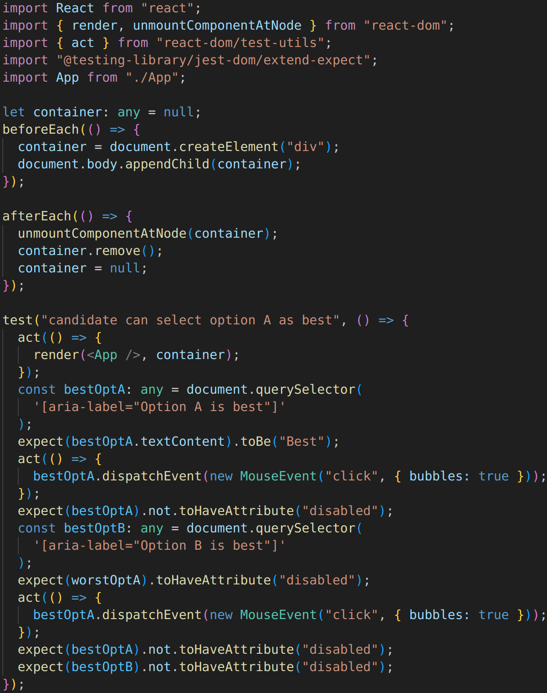
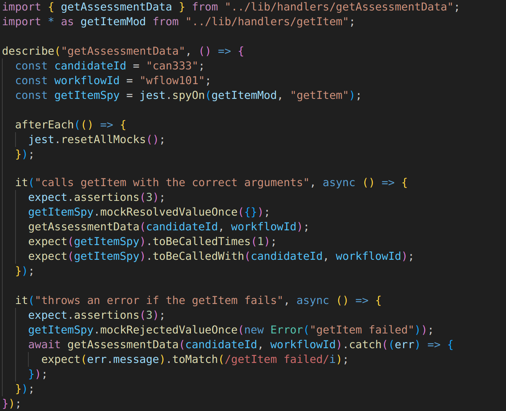
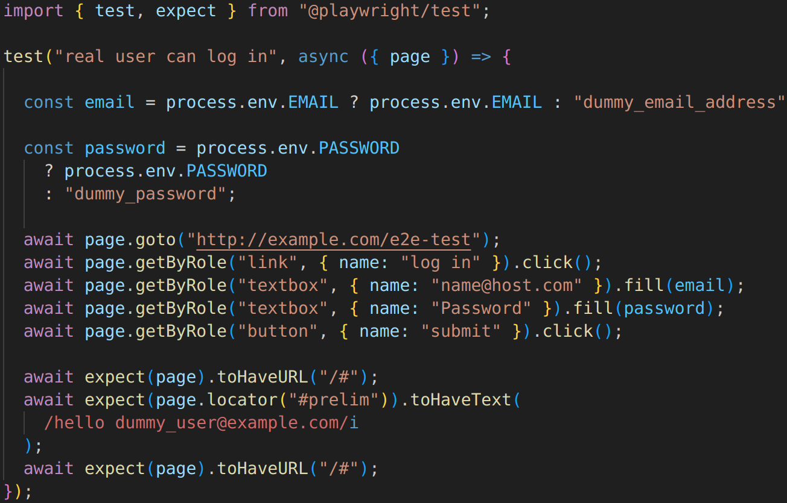

Full-stack web development
Our web design projects are illustrated by the following examples and demos.
Machine Learning
The Ron Reade app uses Transformers.js to run compact AI models inside a web browser, see GitHub repository. Hence this text-to-speech app maintains complete user privacy while reading aloud text with natural cadence and realistic speech.
Web Components
"Sensors: accuracy vs precision" app packs a whole application (compressed to ~10kB) into a simple, standards compliant, HTML web components, such as:-
<web-comp>
<script type="module" src="web-comp.js"></script>
</web-comp>
Situational Judgement Tests
Situational Judgement Tests assess candidates' subtle judgements via a web app built in TypeScript with Next.js and React. Validated by Usability Studies, the app maintains accessibility with bespoke HTML attributes such as:-
aria-label="Option A is best"
Serverless
CDK pseudo-code
See GitHub.com/MartinMPhil/oak for examples of infrastructure-as-code using Cloud Development Kit (CDK) deployed on Amazon Web Services (AWS).
Authentication pseudo-code
See Martin M.Phil. GitHub repository for examples of OAuth login with Cognito user pools.
See Martin M.Phil. GitHub repository for this single-table database design which provides fast, reliable, scalable and inexpensive queries on the secure and fully-managed DynamoDB.
See Martin M.Phil. GitHub repository for an example of TypeScript server functions running in Node.
Test driven development
Specifying unit tests before writing code increases code quality and quickens software development.
Integration tests ensure modules and components function well together.
End-to-end tests allow simulate real-user interactions.
Web design
As a user I want to easily create my suggestions, via desktop or mobile, to begin the voting process. Acceptance criteria:-
- Expandable input text fields
- Unique identifiers for each proposal
- Easily rearrange proposal order
- Allow editing before distribution
- Responsive mobile-first web design